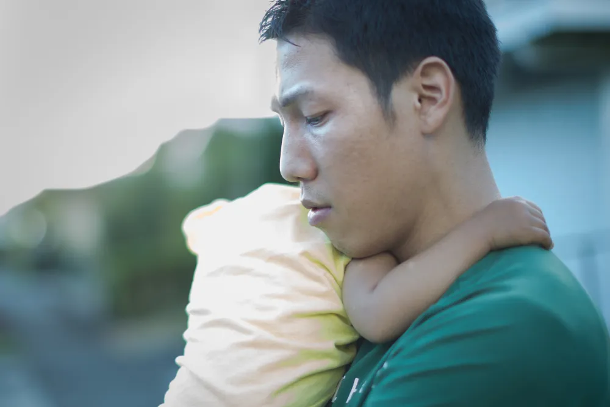

Postpartum Depression in Men: Symptoms, Causes, and Treatment

When you think about postpartum depression, you may only consider how it impacts new mothers. And it’s no wonder: Cleveland Clinic notes that up to 75-percent of new moms experience “baby blues” following giving birth, and about 15-percent of them will develop a more serious form of depression known as postpartum depression (PPD) . However, a lesser talked about (and known) topic is how men are affected following the addition of a new baby. In fact, WebMD cites a study that suggests about 10-percent of new dads become depressed following a birth, which is almost in line with the rate of depression for new moms. PPD in men is sometimes also referred to as paternal postpartum depression (PPPD) or Paternal Postnatal Depression (PPND).
Changes in Mood Coinciding With Childbirth
When looking for signs of postpartum depression in men, the onset of depression immediately or soon after becoming a dad is a big indicator, says WebMD. While “daddy blues” can last a few days, look for behaviors that might be out of character for the new dad, such as a low mood that’s not typical and that lasts for several weeks, says the source.
The site says if you notice some uncharacteristic signs from the father – such as becoming less interested in things he enjoys and having less energy for everyday tasks – then it may be time to seek medical help.
Loss of Interest In The Mother or Baby
Men are believed to have hormonal changes during their partner’s pregnancy that could help them bond with a baby (more on that later). But Parents notes that “distancing himself from you and the baby” may be a red flag that he’s experiencing postpartum depression.
While turning his back on his fatherly duties or not tending to the mother, a man experiencing postpartum depression may also be engaging in problem behaviors such as gambling, drinking and substance abuse as well as other “reckless behaviors” adds the source. The new dad may also be spending a lot more time at work suddenly to help them cope with life changes, it explains. At the same time, other sources point out that a man may become depressed if he believes he’s being excluded from the mother and child relationship.
Physical Symptoms Might Be Present
Men who are experiencing PPD might have more than just a low mood or irritability. Pacific Post Partum Support Society notes that there can actually be an “increase in complaints” about physical effects from PPD that includes problems with digestion, pain, or headaches.
There could be other physical signs such as “significant” weight gain or loss as well as fatigue, notes the source. If these signs didn’t exist previously, then it might be wise to look further into the issue to determine whether it’s PPD at play.
Men Are More at Risk When Partners are Depressed
Sources explain that the link between postpartum depression and men is not completely understood, and Healthline notes that there’s “no specific measurement” for assessment as there is for new mothers. But there are studies that are showing some possible risk factors for men developing the condition following a birth, adds the site.
For example, Healthline cites studies that suggest the rate of postpartum depression is higher for men who don’t live with their children – although it also notes that fathers that do live with their kids “show increasing depressive symptoms” as their children develop and reach age five. The rate of depression among men jumps (from 24 to 50-percent) for those who have a partner that is also experiencing postpartum depression , it adds.
Hormonal Changes Might Be a Culprit
The hormonal balance of men during and after a pregnancy of their partner is not usually something that’s in the spotlight. There’s plenty of evidence to show how hormonal changes affect women during and after pregnancy, but not so much when it comes to new fathers.
However, at least one study suggests that men also go through hormonal changes during a pregnancy, and sometimes long after. The study explains that testosterone levels in particular can drop during gestation, a few months before the child is born. And what’s more, adds the study, is that these low levels may remain for “several” months following the birth. Researchers think this dip in testosterone may be to lower aggression and form better bonds with the baby.
Age and Economic Factors Could Weigh In
The Mayo Clinic also acknowledges that men can be at risk for postpartum depression, and that their symptoms can mimic the signs in women. However, the source outlines a few other risk factors when it comes to new dads experiencing depression following the birth of their child.
In particular, it notes that fathers who are “young” (no specific age range is given), or are experiencing financial trouble could be at higher risk. Furthermore, those who have an unstable relationship with the mother can also be more likely to develop postpartum depression, it adds.
Lack of Quality Sleep May Play a Role
If you’re a new parent living with the child, then you already know the kind of disruption it can have to your sleep, whether it is to check on the crying baby at 2 a.m. or administer feedings. However, while Sleepfoundation.org says that this can account for a lack of energy, it doesn’t necessarily mean it’s postpartum depression.
Getting more rest will usually correct the lethargy, but if it doesn’t, it could point to postpartum depression, it adds. Quality of sleep is more important than quantity if you’re actually experiencing depression, “with PPD sufferers reporting that they simply don’t sleep well,” notes the source. Try taking a nap (hopefully uninterrupted) or find some “me time” to chill out and measure the effect on your mood, it suggests.
History of Depression Increases Risk
Postpartum.org has a list of other possible reasons a new dad may be more likely to become depressed following the arrival of his child. For example, he might have had a history of depression, or depression might run in the family, it notes.
Other PPD risk factors for men not already mentioned include being worried about their new role as a parent and feeling overwhelmed by expectations, having a lack of emotional support, missing intimacy with their partner, or witnessing a stressful birthing experience, it adds.
Men Less Likely To Report PPD
The same study mentioned earlier that draws a possible line between hormonal changes and PPD in men also notes that men are less likely to report symptoms of the condition. A doctor cited in an article on Psycom.net explains that, “For men, going from dude to dad is very different from any other event in their lives.”
The article notes that a man’s reluctance to seek help for this form of depression is often rooted in masculinity, and not wanting to be seen by their partner as “weak and helpless.” However, as a dad (who is also a doctor) that experienced PPD explains in the article, ignoring the problem can actually worsen it.
Diagnostic Criteria is Geared Towards Women
Healthline notes that aside from the challenge of men not talking about how they feel during the postpartum period, the Diagnostic and Statistical Manual of Mental Disorders only considers the symptoms following giving birth to confirm PPD. As a result, the criteria are specific to women, it explains.
However, major depression can be diagnosed in men, and signs include disruption in sleep and eating patterns, loss of interest in joyful activities, lowered cognitive function and focus, and lethargy. Men experiencing PPD might also feel guilt or have thoughts of self-harm, adds the source. It explains that having four or more of these symptoms for 2-weeks or longer might suggest depression.
There Are Self-Help Techniques
First off, know that PPD in men (and women) is a serious condition that should be dealt with by a medical professional. However, with that said, Postpartumdepression.org has some suggestions that can help ease symptoms related to the condition.
For example, the site explains that men who are experiencing signs of PPD should engage in regular exercise, as well as trying meditation and yoga to lower stress. Other suggestions include eating a healthy diet, getting more (quality) sleep, and journaling , which can help you sort out your feelings and solve problems.
Don’t Hesitate To Seek A Professional
Know that while the symptoms of PPD can be debilitating to any new parent, it can also lead to suicide or thoughts of suicide. (Among postpartum women, suicide is the second leading cause of death , and thoughts of suicide or death are common symptoms among postpartum men).
However, despite this, men must understand that they are experiencing a real health condition and not be ashamed to reach out for medical help. Possible treatments might include antidepressant medications, as well as counseling, notes Postpartumdepression.org. It also notes that there are many support groups that are specifically designed for men experiencing PPD.
Source: https://activebeat.com/your-health/postpartum-depression-in-men-symptoms-causes-and-treatment/